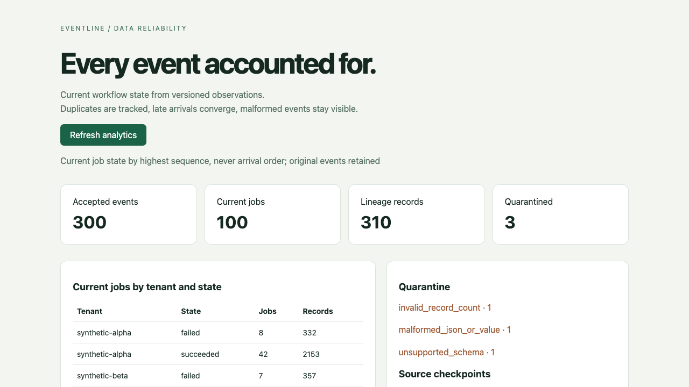

Every event accounted for.
Validate and checkpoint event files, quarantine malformed rows, and rebuild analytical state without losing original lineage.
Static evidence walkthrough. This is a published record of local measured runs, not a live backend. The complete runnable service is in the repository.
What was verified
- Duplicate and conflicting identities, late/out-of-order events, quarantine and line-level provenance
- Actual child process killed midfile; checkpoint resume and full recomputation converge
- Real durable-service event export ingested with no quarantine and passing quality checks
- Linux container generated 20 jobs and served 60 events / 20 analytical jobs

Run the project
git clone https://github.com/RoshanDewmina/incremental-data-pipeline cd incremental-data-pipeline uv sync --frozen make test make seed make demo
Limits that matter
- Single-host SQLite and bounded 20 MB source files
- Contradictory histories use first accepted identity and need reconciliation; no order-independent conflict resolution claim
- Static evidence only; no persistent public ingestion backend provisioned
Independent review: Independent Astra review and bounded re-review; root verified accepted corrections. Source at page generation: 3004835fe5ff0c7c767dc0886a857194811c0703. Software verification does not prove personal mastery; interview understanding and resume wording remain pending user review.
External spending for this portfolio remains $0. Local hardware/electricity cost unmeasured. Synthetic workloads do not establish production capacity.